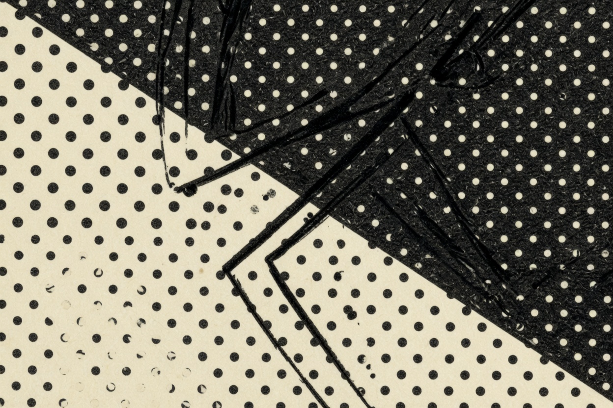

The prompting path · 03 · Craft
Screentone is a decision
Dot patterns are not a filter you pour over a finished picture. They are where you spend the gray.

In printed manga, tone does a job. It separates a coat from a wall. It makes a night street readable without drawing every brick. It pushes a background back so the line in front can stay thin. It can also do nothing useful and turn the panel into static.
“Add screentone” is not a decision. It asks for the surface of manga without saying which surface, how heavy, or where it stops.
Three decisions
Where it goes. On the coat, not on the face. In the sky, not on the person. In the shadow under the table, and nowhere else. If you do not name the stop, tone creeps until every surface is dotted and the eye has nowhere to rest.
How heavy. Sparse, middle, or near-black. A quiet dialogue panel wants one weight. A night exterior can want two: dense in the alley, sparse on the wet ground so a reflection can still read as a line.
What it stands in for. Time of day, weather, material, or depth. Name one. A noon kitchen and a rain alley should not receive the same sentence about tone. If they do, you have styled them instead of staging them.
Leave skin mostly open unless a shadow actually crosses it. Open paper reads as light. A face full of dots reads as dirt, or as a photocopy.
Noon, and rain
Same lock as the previous essay. The tone is what changes. Paste the lock, then one of these.
An original woman in her early thirties. Short uneven black hair, one longer strand over her left eye, a small scar through the left eyebrow. Worn indigo work jacket over a plain white shirt. Keep this face, this hair, and this jacket the same. Manga panel, no lettering. She stands at a kitchen table, medium shot, eye level. Hard noon light from the right, a clean shadow of a cup on the table. Printed halftone only as a light, even gray on the indigo jacket. Face, shirt, and wall left as open paper. Thin, confident outlines. No speed lines.
An original woman in her early thirties. Short uneven black hair, one longer strand over her left eye, a small scar through the left eyebrow. Worn indigo work jacket over a plain white shirt. Keep this face, this hair, and this jacket the same. Manga panel, no lettering. She stands under a station awning at night, three-quarter figure. Rain drawn as fine vertical lines in the background only. Dense printed halftone in the street behind her, stopping in a hard edge at the awning. Her jacket keeps the same mid gray as in daylight. A bright patch of open paper on the wet ground where a lamp reflects. No city detail past what the tone already darkens.
The second prompt is not “more detailed.” It spends black in the back so the figure can stay simple.
That is the usual bargain. Detail everywhere is how a panel loses its foreground.
If the tone comes back as a fuzzy airbrush gradient, say “printed halftone dots” and repeat the place it stops. If it covers the eyes as well as the coat, you skipped the stop. Add the stop. Do not add “ultra detailed.”
Tone is also how you fake a lens without asking for one. A figure in open paper against a toned room is already in focus. You do not need the word “bokeh,” and the word often pulls the picture out of ink and into a poster.